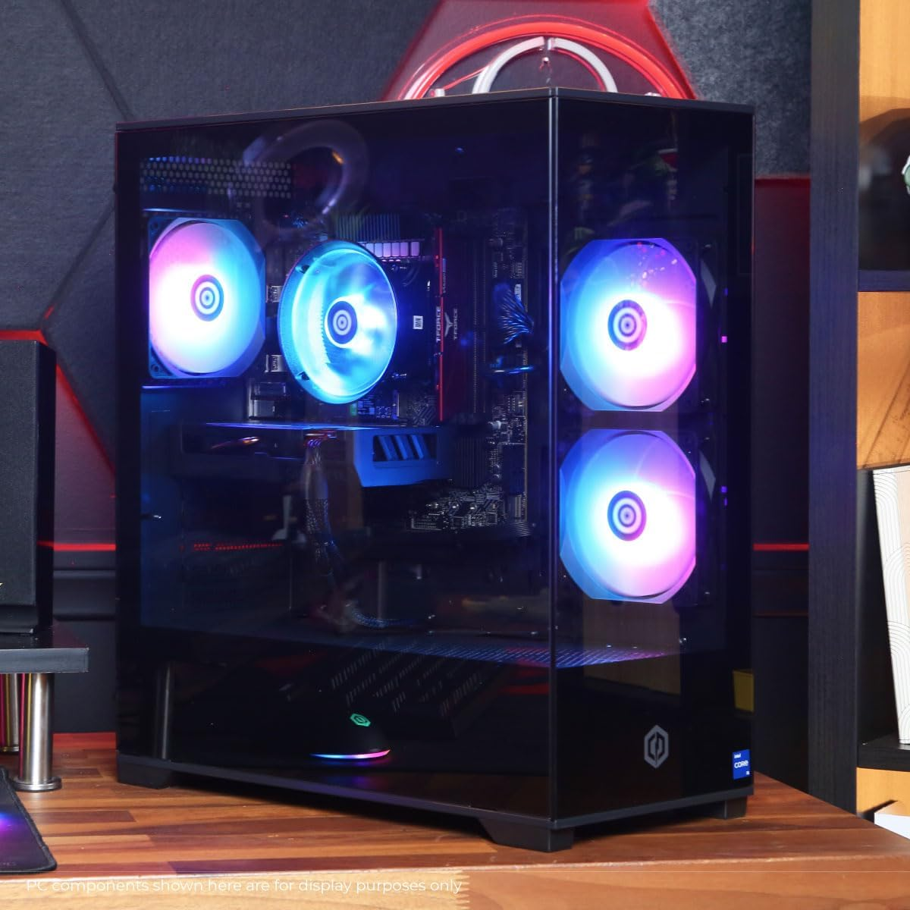
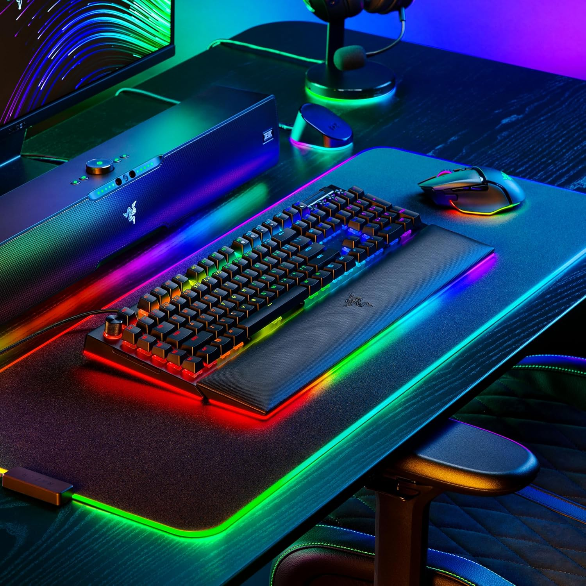

La Acer Nitro V combina potencia y estilo para ofrecer una experiencia de juego fluida y envolvente.
Su diseño moderno y compacto permite disfrutar de un rendimiento de nivel profesional tanto en casa como en movimiento.
Perfecta para quienes buscan velocidad, eficiencia y gráficos impresionantes en cada partida.
Con su pantalla de alta tasa de refresco y un sistema de enfriamiento optimizado,
este portátil mantiene un desempeño estable incluso en los momentos más intensos.
Una excelente opción para gamers, creadores de contenido y profesionales exigentes.
Característica
Descripción
Procesador
Intel Core i7-13620H
Tarjeta Gráfica
NVIDIA GeForce RTX 4050
Memoria RAM
16 GB DDR5
Almacenamiento
SSD 1 TB Gen 4
Pantalla
15.6" FHD IPS, 165 Hz
Conectividad
Wi-Fi, Bluetooth
Funciones especiales:
Tecnología MUX Switch que permite desactivar la gráfica integrada y aumentar el rendimiento en juegos.
Sistema de enfriamiento avanzado con doble ventilador, entradas de aire superiores e inferiores y diseño de cuatro salidas de escape.
Utilidad NitroSense incorporada para ajustar velocidad de ventiladores, iluminación y monitorear el sistema en tiempo real.
Tecnología Acer CoolBoost que mejora la disipación térmica y mantiene la temperatura bajo control durante largas horas de uso.
Puertos versátiles, incluyendo USB-C con soporte DisplayPort y carga rápida para conectar múltiples dispositivos o monitores externos.
Marco de pantalla ultrafino que maximiza el área visible y ofrece una experiencia visual más inmersiva.
Optimización automática mediante inteligencia artificial (Max-Q + AI) para equilibrar potencia y eficiencia energética.

PC Prearmada CyberpowerPC, para gaming
CyberPowerPC Gamer Xtreme VR Gaming PC
US$1049.99
El CyberPowerPC Gamer Xtreme es una estación de poder lista para ofrecer una experiencia de juego y trabajo excepcional.
Su rendimiento permite ejecutar títulos exigentes, realizar streaming, edición de video o multitareas sin esfuerzo.
Su diseño transparente con iluminación RGB lo convierte en una pieza atractiva para cualquier setup gamer.
Además, viene completamente configurado y optimizado, para que solo debas encenderlo y disfrutar de su potencia inmediata.
Característica
Descripción
Procesador
Intel Core i5-13400F 2.5GHz
Tarjeta Gráfica
NVIDIA GeForce RTX 5060 8GB
Memoria RAM
16GB DDR5
Almacenamiento
1TB PCIe 4.0 SSD
Sistema Operativo
Windows 11 Home
Conectividad
WiFi Ready
Funciones especiales:
Panel lateral de vidrio templado que muestra el interior con iluminación RGB.
Control de iluminación RGB integrado (chasis/ventiladores) con perfiles predefinidos.
Wi-Fi integrado para conexión inalámbrica inmediata sin cable Ethernet.
Conjunto de periféricos incluidos (teclado y mouse) para usarlo desde el primer encendido.
Soporte técnico de por vida del fabricante y garantía limitada de 1 año en partes.
Acceso frontal a puertos (USB/Audio) para conectar accesorios rápidamente.
Imagen de recuperación del sistema para restablecer el equipo a estado de fábrica.

Teclado Razer Black Widow V4 Pro, alámbrico
Razer Teclado mecánico BlackWidow V4 Pro
US$189.99
El Razer BlackWidow V4 Pro redefine la experiencia de juego con una sensación mecánica precisa y una estética premium.
Cada pulsación es rápida, silenciosa y suave, brindando el control absoluto que los jugadores más exigentes buscan.
Con iluminación RGB totalmente personalizable, teclas macro dedicadas y un cómodo reposamuñecas magnético,
este teclado está diseñado para largas horas de uso, garantizando confort, estilo y máximo rendimiento.
Una herramienta de élite para quienes quieren lo mejor en su estación de juego.
Característica
Descripción
Tipo de Interruptores
Naranja, táctiles y silenciosos
Teclas
ABS de doble enfoque
Iluminación
Chroma RGB personalizable
Conectividad
Con cable USB
Extras
Esfera de comando y reposamuñecas magnético
Funciones especiales:
Razer Command Dial con modos personalizables para atajos y flujo de trabajo.
Rueda/controles multimedia dedicados para volumen, reproducción y silencio.
Memoria integrada para guardar perfiles y macros sin depender del software.
Anti-ghosting con N-key rollover para registrar múltiples teclas a la vez.
Modo Juego que desactiva la tecla Windows y evita interrupciones.
Reposamuñecas magnético con iluminación underglow para mayor inmersión.
Keycaps Doubleshot ABS y placa superior reforzada para mayor durabilidad.
Cable USB-C desmontable para transporte y gestión de cables más limpia.